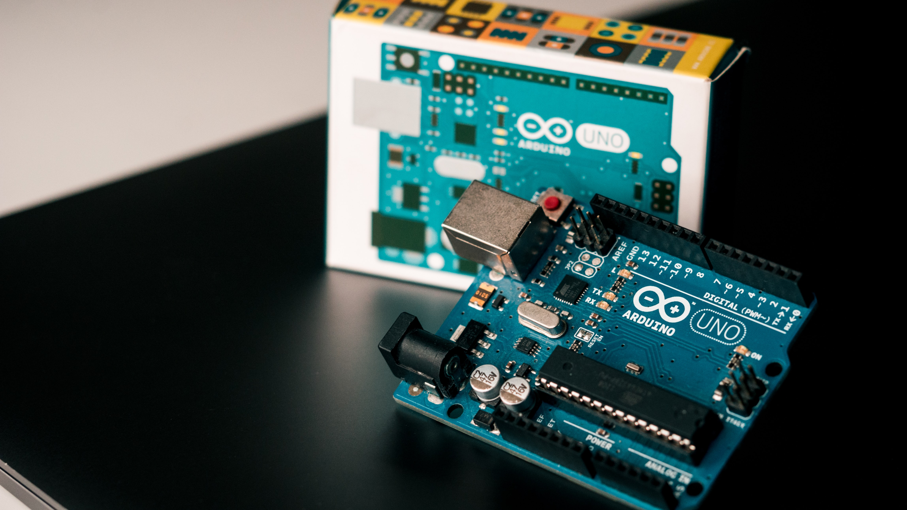
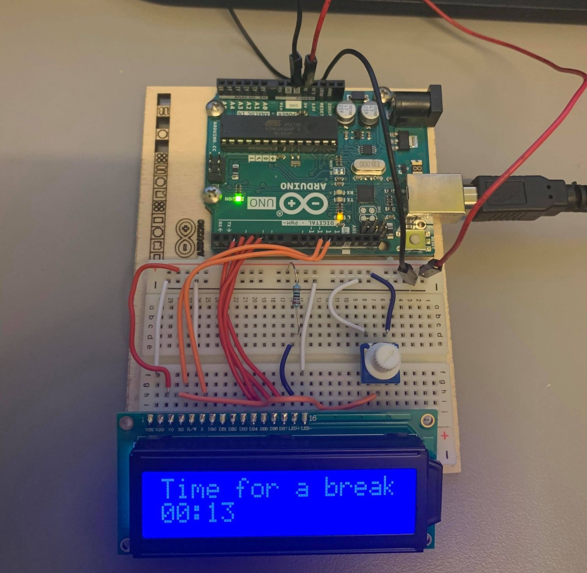
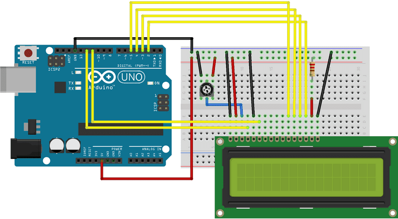
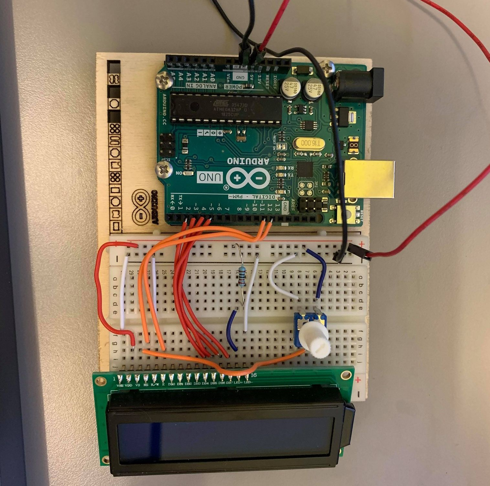

Elektronikk og Arduino

Prosjektet jeg lagde til dette temaet var en «Pomodoro-klokke». Når jeg jobber med skolearbeid bruker jeg som regel noe som heter pomodoro-teknikken. Den går ut på at man jobber konsentrert i 25 minutter før man tar en 5 minutters pause. Dette repeteres 4 ganger før man tar en lengre pause. I dette prosjektet har jeg laget en slik klokke på LCD-displayet som følger med i Aduino Starter Kit. Dette baserer seg delvis på prosjekt 08 Digital Hourglass og prosjekt 11 Crystal Ball fra prosjektboka, i tillegg til noe fra HelloWorld-tutorial og BlinkWithoutDelay på nettsiden til Arduino.

Utstyrsliste
- Arduino Uno
- USB-kabel
- Kabler til elektronikk
- 220 ohm resistor
- LCD-skjerm
- Potentiometer
Elektronikk
Jeg startet med å koble elektronikken. Her fulgte jeg instruksene på arduino.cc.


Jeg gjorde et forsøk på å fargekode de ulike koblingene så langt det lot seg gjøre. Hvite kabler går til ground, mens røde og blå går til power. Det er også røde og oransje som går til pins på arduino-brettet, da det var disse som passet best lengdemessig. Elektronikken i dette prosjektet er ikke altfor komplisert, men det blir en del ledninger ettersom LCD-skjermen krever det.
Forklaringene er basert på mine koblinger, og er ikke helt likt
med tegningen i forhold til farger og plassering.
1. Jeg startet med å koble til power og ground. Dette er de
to lengste ledningene som må være med i alle prosjekter (så vidt
jeg har forstått) og det er disse som gir strøm fra arduinoen og
gjennom brettet.
2. LCD-skjermen plasseres på breadborded helt nederst i
høyre hjørne. Denne har da 16 pins som står i plassene fra 30j til
15j.
3. Deretter begynte jeg å koble ledningne som skulle være
koblet til brettet. Jeg startet med å plassere de fire røde
ledningene som ligger inntil hverandre. Grunnen til at jeg startet
med disse var at jeg gikk utifra at disse ville ligge veldig tett
og dermed var det enklere å plassere dem før brettet fikk flere
ledninger. Her er pins 2-5 på arduino-brettet koblet til DB7-DB4
på LCD-skjermen i den rekkefølgen (2-DB7, 3-DB6 osv.). Disse er da
ulike data pins som forteller skjermen hva den skal vise. Etter
disse var på plass fortsatte jeg nederst på breadbordet og jobbet
meg oppover.
4. Den nederste kabelen (hvit) er koblet mellom VSS på
LCD-skjermen og til ground, og den røde er koblet mellom VDD og
power. Dette er strømforsyningen til skjermen, der VSS er negativ
og VDD er positiv.
5. Den neste på lista er koblingen mellom V0 og og den
pinnen som står alene potentiometeret. Dette gjør at man kan endre
kontrasten på skjermen, noe man som regel må gjøre. Da jeg skrudde
på skjermen første gangen og kjørte
HelloWorld-prosjektet
for å sjekke at alt funket var det bare en helt blå skjerm. Dette
løste seg derimot fort da jeg skrudde på potentiometeret. Videre
fra de to andre pinnene på potentiometeret koblet jeg den nederste
til ground og den øverste til power.
6. Koble RS til pin 12 på arduino-brettet. Denne kontroller
hvor tegnene vil være på skjermen.
7. Koble R/W til ground. Denne putter skjermen i read-
(lese) eller write- (skrive) modus. I dette prosjektet brukes
write-modus og den kobles dermed til ground.
8. E kobles til 11 på arrduino-brettet. Denne står for
Enable og forteller LCD-skjermen at den vil motta kommandoer. Både
i boka og andre steder omtales denne som EN men på den
LCD-skjermen jeg har står det kun E.
9.LED+ kobles til power gjennom en 220 Ohms resistor og
LED- kobles til ground.
Kode
Koden til prosjektet
Koden til dette prosjektet er heller ikke spesielt komplisert, men
ettersom jeg ikke har noe erfaring med hverken Arduino eller C++
tok det litt tid å få dette til å fungere slik jeg ville. Det som
tok desidert mest tid var å få til dette med tidtaking, noe som er
ganske essensielt i en stoppeklokke. For å få til dette leste jeg
gjennom koden til
BlinkWithoutDelay
på nettsiden til Arduino som heldigvis var godt kommentert. Ut
ifra dette fikk jeg da litt bedre forståelse av hvordan tidtaking
fungerer i Arduino sammenlignet med det som står i prosjekt 08
Digtal Hourglass i prosjektboka. Det er mye kommentarer i koden og
og forklaringen på hva som er gjort ligger der. Det meste er
kommentert, men det som ikke er det bør være ganske forståelig.
Ferdig produkt i praksis
Senere forbedringer
Grunnet mangel på tid og en del annet skolearbeid rakk jeg ikke å
fullføre dette prosjektet slik jeg tenkte.
1. Planen var å utvide det litt slik at det også var to
lamper; en grønn og en rød som lyste utifra om det var tid for å
jobbe eller pause.
2. I tillegg til dette kan det relativt enkelt legges til
enda en runningState i koden som er lang pause etter 4 runder der
feks både rød og grønn lampe lyser samtidig.
3. Det hadde også vært mulig å ha en knapp som enten kan
brukes til å se hvor lang tid det er igjen av pausen/jobbinga
eller eventuelt sette timeren på pause (selv om da forsvinner
kanskje litt av poenget).